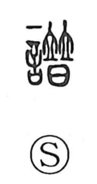

譜

Uncategorized
Kun: | On: fu
score ・ record ・ genealogy
Explanation
譜 is a phono-semantic character: the 言 element points to a written or spoken record, while 普 supplies the sound fu. Shirakawa understands 普 as originally depicting two people standing in succession to swear an oath, which gave it senses like “all” and “widespread.” Early glosses describe 譜 as denoting a “category/affiliation” (zoku), namely a document that sets out the keizoku—people arrayed in a line—hence a keifu, a genealogical chart tracing ancestral ties. From this organized listing of relationships arose the broader idea of a record or, by extension, a score.